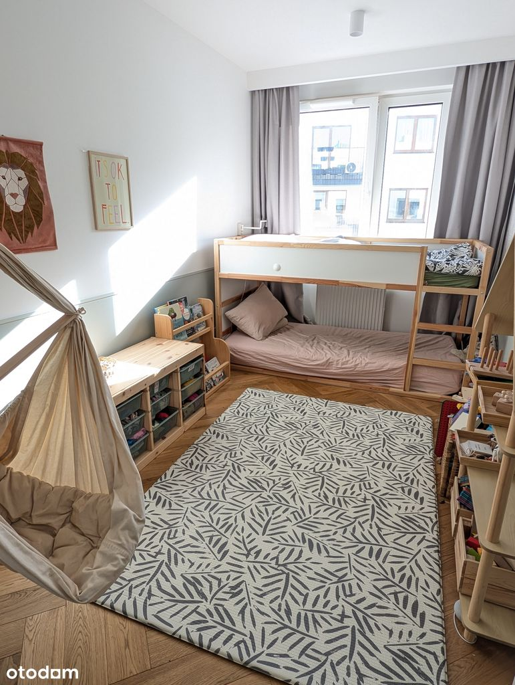
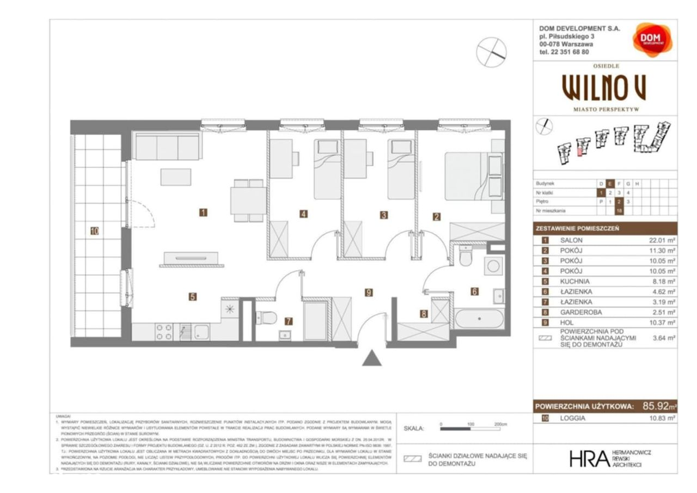
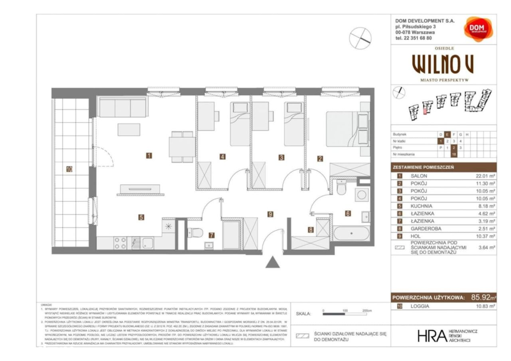

Opis nieruchomości
Na sprzedaż, bezpośrednio, przestronne, 4-pokojowe mieszkanie o powierzchni 86 m² z dwiema łazienkami oraz garderobą, położone na 2. piętrze w budynku z 2022 roku. Dodatkowym atutem jest loggia o powierzchni ponad 10 m². Osiedle Wilno zapewnia wygodną komunikację z centrum Warszawy – do dyspozycji mieszkańców jest własna stacja kolejowa. W okolicy znajdują się liczne tereny rekreacyjne oraz bogata oferta handlowo-usługowa, co czyni to miejsce w pełni funkcjonalną przestrzenią do życia.
O nieruchomości
Mieszkanie zostało urządzone w wysokim standardzie, we współpracy z architektami wnętrz. Na całej powierzchni położona jest deska dębowa, w łazience z wanną charakterystyczne gorseciki warszawskie. Wewnętrzne drzwi są ukryte, bez ościeżnic, co nadaje wnętrzu minimalistyczny i estetyczny charakter. Kolory zostały dobrane tak, aby wnętrze miało odważny, a jednocześnie spójny styl – podkreślają go wysokiej jakości tapety, sofa oraz obrazy na ścianach.
W salonie znajduje się gotowe kino domowe: projektor, duży ekran projekcyjny (130"), system audio oraz elektryczne rolety zaciemniające. Zabudowa meblowa została wykonana na wymiar przez stolarza, a w salonie i sypialniach dopełniają ją drewniane meble.
Mieszkanie ma bardzo funkcjonalny rozkład, który został szczegółowo przedstawiony na załączonej grafice.
Lokalizacja
Mieszkanie znajduje się na osiedlu Wilno, na warszawskim Targówku. Do stacji kolejowej oraz przystanku autobusowego można dojść w zaledwie 7 minut pieszo. W okolicy znajdują się liczne sklepy, restauracje, punkty usługowe, placówki edukacyjne oraz centra handlowe (CH Wileńska, Atrium Targówek, M1, IKEA w Markach). Budynek jest oddalony od ulicy, co zapewnia ciszę i spokój, a jednocześnie bliskość najważniejszych punktów: sklepu Żabka, czy największego na osiedlu placu zabaw.
Osiedle Wilno jest bardzo dobrze skomunikowane z innymi częściami miasta:
– 4 minuty do stacji metra Dworzec Wileński dzięki własnej stacji kolejowej i linii autobusowej, co gwarantuje wygodny dojazd do centrum,
– stacja Veturilo przy bloku, dojazd rowerem do metra zajmuje 7 minut,
– 15 minut do stacji metra Świętokrzyska,
– Bliskość ul. Radzymińskiej umożliwia szybkie przemieszczanie się po mieście,
– 4 km do trasy S8, która pozwala na łatwy wyjazd z Warszawy,
Informacje dodatkowe
Mieszkanie znajduje się na zamkniętym, monitorowanym osiedlu. W pobliżu jest duży plac zabaw, kanał Bródnowski idealny na spacery oraz droga pożarowa, która służy jako miejsce spotkań z sąsiadami i bezpiecznej zabawy dla dzieci (rowery, rolki).
Do mieszkania przynależy komórka lokatorska (z zabudową stolarską) w piwnicy oraz rodzinne miejsce postojowe (na dwa samochody) w garażu podziemnym – dodatkowo płatne 80 000 zł
 
